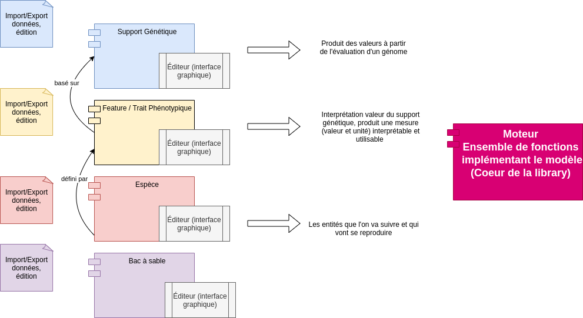

22/02/2021
version 1
Construire une bibliothèque que n’importe qui peut installer et utiliser dans ses propres projets informatiques. Cette bibliothèque est constituée d’un moteur (un ensemble de fonctions implémentant le modèle) ainsi que de données (avec un format bien défini) exportables et importables. Ainsi, les utilisateurs pourront partager leurs données entre eux (design du génome, des traits phénotypiques et des espèces) et une communauté pourrait se former construisant petit à petit des designs de plus en plus élaborés. L’idée c’est qu’on pourra construire à partir de ce qu’on a construit.
Pour permettre cela tout en étant user-friendly des éditeurs avec interface graphique seront développés :
Les 3 éditeurs permettront d’éditer, importer, exporter, dupliquer, supprimer, ces 3 type de données facilement. Ces données seront ensuite importées dans le projet informatique de l’utilisateur et celui-ci, après import du moteur, pourra faire tourner le modèle dans le but qu’il s’est fixé.
S’amuser. Fournir un moteur permettant de simuler des entités (biologiques ou non) possédant des caractéristiques (traits phénotypiques) interprétables par l’utilisateur. Ces caractéristiques sont le résultat de l’évaluation d’un support génétique (principalement). Les entités pourront se reproduire et transmettre à leur descendance une part de leur génome pour créer de l’hérédité, de la filiation (et de l’histoire). Ce génome pourra également être soumis à des mutations et évoluer. L’utilisateur pourra alors facilement simuler de la sélection et des populations au cours du temps dans son propre projet. Les espèces pourront muter, les populations évoluer etc. En somme un gros bac à sable. Ce modèle pourrait avoir des ambitions plus générales. Car s’il vise principalement à simuler de la vie, le moteur pourrait être appliqué à d’autres objets. On peut penser par exemple à faire une filiation de langues (en utilisant des méthodes de philologie comparée comme a pu le faire (sérieusement) Tolkien : utiliser des règles spécifiques de mutation qui permette de passer d’un mot ancêtre à un mot descendant et vice versa). En fait tout ce qui est sujet à itérations successives, tout objet qui« produit du nouveau a partir de lui même » pourrait être simulé.
La contrainte forte du modèle c’est qu’il faut définir à l’avance des traits phénotypiques auxquels l’utilisateur pourra donner du sens. J’insiste là dessus car le but est de pouvoir interpréter fonctionnellement le phénotype pour prendre des décisions. Ce que j’entends par là c’est que si une espèce possède un trait phénotypique qui renvoie la valeur ‘foo’ il faut que cette valeur puisse (pas nécessairement) avoir un sens pour l’utilisateur dans son programme. En ce sens, les traits phénotypiques doivent être définis dès le départ et le réservoir de phénotypes possibles doit pouvoir être contrôlé.

Le projet se compose des composants suivants à concevoir et développer :
Les structures de données seront complexes et un éditeur graphique pour les manipuler sera (quasi) indispensable. Ces éditeurs permettront d’importer et d’exporter les données facilement, de les éditer, dupliquer, supprimer. Le modèle est piloté par les données, ces structures sont capitales et doivent être manipulées et définies de manière rigoureuses.
L’utilisateur de la bibliothèque pourra faire évoluer des populations d’individus possédant un phénotype, ou un ensemble de traits observables et mesurables. L’utilisateur pourra évaluer les traits de chaque individu et leur appliquer le traitement qu’il souhaite. Ces traits seront l’expression d’un génome diploïde porté par chaque individu, transmissible par reproduction ou clonage de génération en génération.
Le support génétique (encodé en binaire) lorsqu’il est évalué produit une valeur. Cette valeur est ensuite interprétée par une feature qui produit à son tour une valeur auquel l’utilisateur donne une unité de mesure. L’expression de la feature est alors remontée dans le phénotype, le résultat de l’évaluation de toutes les features de l’individu. La valeur en sortie d’une feature peut servir d’entrée à une autre feature et ainsi de suite. Ainsi, le phénotype forme une collection de couples clé:{valeur, unité} produite par l’évaluation d'un réseau de features (possiblement) interdépendantes, fondé sur un support génétique.

Lors de la reproduction ou du clonage, le support génétique est transmis à l’aide de mécanismes connus de la biologie (mais nécessairement simplifiés) : mitose, méiose.
Le support génétique pourra être exposé à des mutations. Chaque individu disposera en plus de son support génétique d’un état interne modélisant les effets épigénétiques. Cet état supplémentaire, non encodé dans le génome, pourra modéliser la transmission de caractères acquis.
Un support génétique est une séquence en binaire (de 0 et de 1) qui peut être évalué pour produire des valeurs entières.
| Support génétique | |||
|---|---|---|---|
| Paramètre | Description | Type | Contraintes |
| Nom | Un nom donné au support | String | Unique |
Nombre de gènes N |
Nombre de gènes contribuant à la valeur du support | Integer | \( N \ge 1\) |
Nombre de bits n |
Nombre de bits sur lequel est encodé chaque gène du support : l’utilisateur pourra choisir d’encoder des gènes sur des structures allant de 1 à 8 bits (limite arbitraire). Ce paramètre défini par défaut le nombre de variations d’un même gène (allèles) accessibles. Par exemple, sur un support à 2 bits on a 4 valeurs possibles : 00 (0), 01 (1), 10 (2) et 11 (3). On a donc, au maximum 4 allèles pour ce gène dans notre « réservoir ». Sur 8 bits on a 256 valeurs possibles, donc 256 allèles possibles pour un même gène. La structure binaire est suffisante pour créer assez de variations (pas besoin de 4 caractères AGCT). | Integer | \( 1 \le n \le 8 \) |
| Rareté d'une allèle \(r\) | Sur les allèles disponibles on peut définir une rareté, un nombre qui sert au moment de la génération de populations. Ce nombre permettra de définir chance qu'un individu généré (non issu d'une reproduction) porte cet allèle initialement. | Float | \( 0 \le r \le 1 \) |
Allèles disponibles na |
Le réservoir d'allèles disponibles est par définition définie par le nombre de bits sur lequel est encodé un gène. L’utilisateur pourra décider de n’utiliser qu'un sous-ensemble de ce réservoir s’il le souhaite. Une allèle est une valeur possible d'un gène. Elle peut donc muter dans l'espace défini par le gène vers une autre valeur. | (Integer...) | \( 1 \le n_a \le N^{2} \) |
Relations entre allèles U |
Tableau de coefficients dont chaque valeur permet de calculer la contribution de chacune des 2 allèles du même gène à l’évaluation du support génétique. L’utilisateur pourra générer ces coefficients de manière aléatoire ou suivant des règles prédéfinies, ou les écrire manuellement (il y a toujours le contrôle total si on le souhaite). | [Float] | \( n_a(n_a+1)/2\) coefficients nécessaires pour évaluer toutes les combinaisons possibles, voir ce tableau |
Pour résumer, l’évaluation d’un support génétique (et la production d’une valeur) se fait en évaluant pour chacun de ses gènes la paire d’allèles (une allèle sur chaque chromosome homologue) correspondante. Les relations entre allèles permettent de calculer la valeur du support génétique.